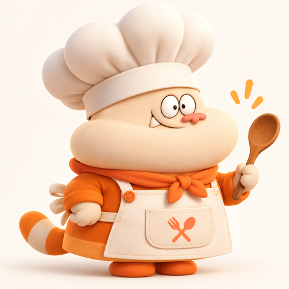

AI Nutrition Chef
Eat smart. Cook happy.
GeminiRAG · ChromaDBLangGraphMemoriaStreamlit
Daniel García Nilo

Mi nevera
Recetas con lo que tengo y lo que me falta
Macros reales
Calorías y proteína calculadas con datos USDA
Mi semana
Menú a mis kcal y lista de la compra
Sustituciones
"No tengo aguacate" → alternativa recalculada
Con fuentes
Responde con la guía oficial de AESAN y la cita
Me recuerda
"Soy vegetariano" vale para toda la conversación
"Estos son mis tres documentos. Así los divido. Así los convierto en vectores. Aquí los guardo. Cuando pregunto algo, estos son los fragmentos que recupera. Y esta es la respuesta que genera Gemini utilizando esa información."
| Documento | Qué contiene | Fragmentos | Palabras |
|---|---|---|---|
| Guía AESAN 2022 (PDF, 19 págs.) | Raciones y frecuencias recomendadas, sal, agua, actividad física | 35 | 4.147 |
| Recetario de MILO | 28 recetas en gramos, estado de cada ingrediente, pasos, alérgenos | 29 | 3.725 |
| Técnicas y sustituciones | Pesar, cocer, hornear, higiene, temperaturas seguras, sustituir | 11 | 1.102 |
Cada fragmento trata un tema · máx. 400 palabras · 50 de solapamiento
Guiones de final de línea, ligadura "fi" del PDF · sin portada, índice ni contraportada
Documento, página o sección y hash SHA-256 de cada fuente
Pregunta: "¿Cuántos huevos puedo comer a la semana?"
↓ gemini-embedding-001 → vector de 3072 números ↓ ChromaDB (distancia coseno)
| # | Fragmento recuperado | Distancia |
|---|---|---|
| 1 | AESAN · página 9 — "máximo de 4 huevos medianos a la semana" | 0,22 |
| 2 | AESAN · página 18 — "De un vistazo" (resumen de raciones) | 0,31 |
| 3 | AESAN · página 10 — "Leche y lácteos con moderación" | 0,32 |
vectores en storage/chroma
dimensiones por vector
Solo se generan los que faltan: reindexar no duplica nada.
| r001 · Bowl de pollo y arroz | g | kcal/100 g | kcal | Proteína |
|---|---|---|---|---|
| Pechuga de pollo cruda | 160 | 112,2 | 179,5 | 36,0 g |
| Arroz blanco seco | 80 | 369,6 | 295,7 | 5,6 g |
| Tomate roma | 120 | 19,0 | 22,7 | 0,8 g |
| Aceite de oliva | 10 | 884,0 | 88,4 | 0 g |
| Total por ración | 586 | 42,5 g |
70 alimentos USDA · valores por 100 g
28 recetas · todas verificadas
Crudo ≠ cocinado · un dato ausente no es 0 · dieta, alergias y "no me gusta" los filtra Python
El catálogo se regenera idéntico byte a byte desde los ZIP oficiales.
buscar_recetasver_recetasustituir_ingrediente calcular_platoplan_semanallista_compra guardar_perfilbuscar_documentos
RAG en cada turno · Gemini decide la herramienta · si una falla, el error vuelve a Gemini · modelo de respaldo ante un 503
src/milo/prompts/system.mdChef digital de cocina y nutrición general. No es médico.
Cercano y bromista; serio con los números; responde en el idioma del usuario.
Usar los fragmentos, citar [n], decir "mis documentos no tratan eso".
Cifras siempre de Python; qué herramienta para cada petición.
"La receta anterior" y el perfil se respetan en cada turno.
No diagnostica · alergias en serio · lactosa ≠ alergia a la leche.
Iteraciones reales: Gemini citaba un fragmento de salmón en una receta de huevos → "las cifras de herramientas no se citan". Copiaba literalmente la frase de ejemplo del tono → la quité.
SqliteSaver de LangGraph
storage/memoria.sqlite
thread_id por conversación
Conversaciones aisladas · en la app, una por navegador
8 turnos enviados a Gemini
El resto sigue guardado
streamlit run app.pypruebas automáticas sin API
pruebas con Gemini real (RAG, citas y memoria)
errores al ejecutar el notebook completo
recetas validadas por Python
¿Preguntas? MILO también tiene hambre de ellas.
Notebook: MILO_Proyecto_Final.ipynb · App: streamlit run app.py · Manual: MANUAL_DEL_PROYECTO.md